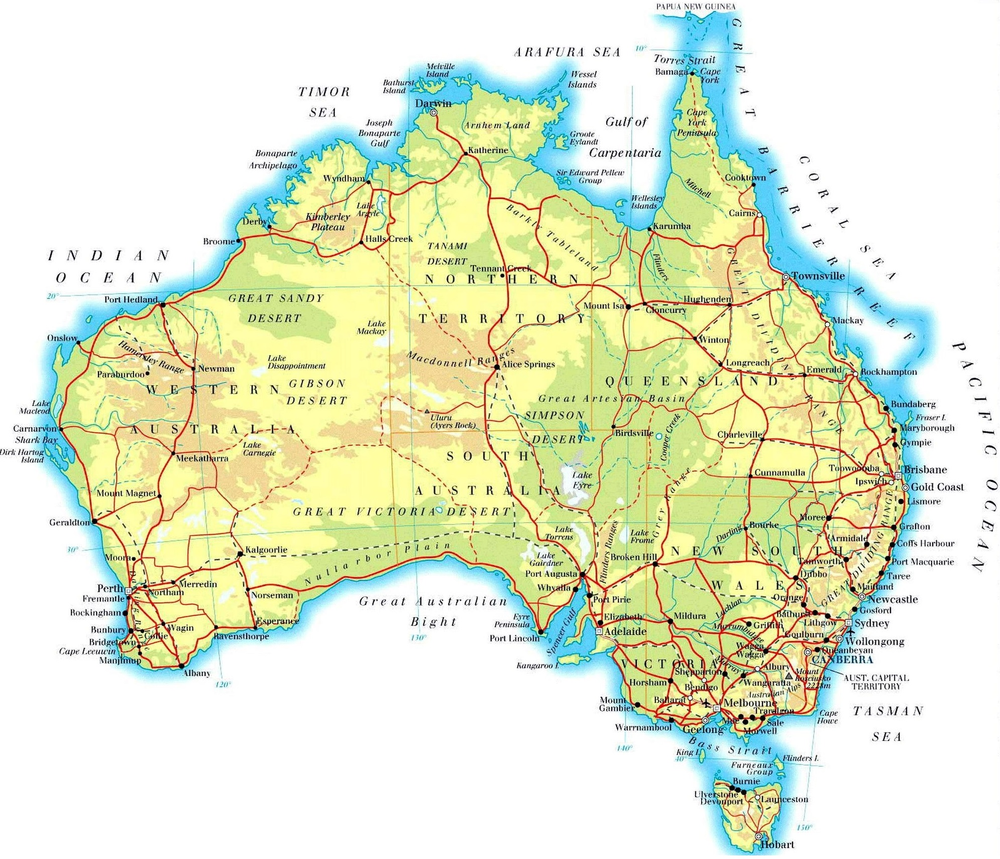
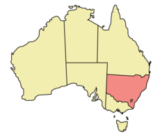
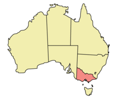
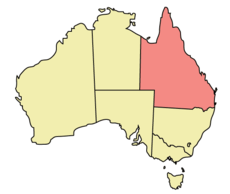
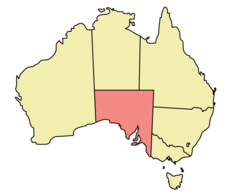
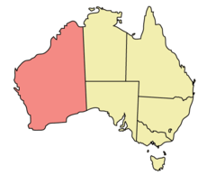
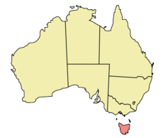
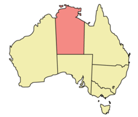
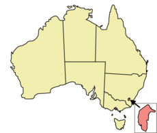

Австралия — самый маленький, плоский и сухой материк (40% в тропиках, одна треть — пустыня, две трети — пограничная зона).
Средняя часть Австралии — низменность с впадиной, где расположено озеро Эйр. Западная часть — плоскогорье (400—500 м) с отдельными хребтами и столовыми горами. Вдоль северо-восточного побережья Австралии располагается Большой Барьерный
риф — крупнейший коралловый риф в мире, протянувшийся на 2000 км вдоль восточного побережья.
Восточная часть Австралии занимает Большой Водораздельный хребет и Австралийские Альпы. Самая высокая точка Австралии — гора Косцюшко, 2230 м.
Штаты и территории Австралии
Новый Южный Уэльс NSW (New South Wales)
Лишь небольшое число мест на земле может похвастаться бóльшим разнообразием ландшафтов и чудес природы, чем штат Новый Южный Уэльс. Здесь находятся потрясающие
пляжи, нетронутая дикая природа, виноградники, зеленые тропические леса, пустынные равнины и покрытые снежными шапками горы.
Столица штата — Сидней. Это один из самых ярких, динамичных и красивейших городов мира. Открытый город, полный естественной природной красоты, предлагающий безграничный выбор вариантов проживания, ресторанов и развлечений на любой
вкус и уровень доходов. Это современных мегаполис, позволяющий оценить все преимущества "пляжного" стилья жизни у океана в контексте города. В самом Сиднее более 30 пляжей. Самыми известными, пожалуй, являются Bondi Beach и Manly Beach.
Сам штат является самым густонаселенным в стране, только в одном Сиднее проживает 4,2 млн. человек.
Виктория VIC (Victoria)
Виктория — самый маленький по территории штат австралийского континента и по размеру сравнится с территорией Великобритании. Штат назван в честь Королевы
Великобритании Виктории, правившей во время формирования штата. Исторически, в городах штата сохранилось великолепное наследие колониальной эпохи.
Столица штата — Мельбурн. Город расположен на берегах красивейшего залива Порт Филлип, на реке Ярра. Мельбурн заслуженно является культурной столицей Австралии. Здесь проходят все самые интересные выставки, фестивали, концерты.
Мельбурн также ежегодно принимает и многие мировые спортивные мероприятия (гонки Формулы 1, международный теннистый турнир (Australia Open), крупнейшие в Австралии скачки (Melbourne Cup Day), матчи по австралийскому футболу и т.д.). Неформально,
Мельбурн считается также модной столицей Австралии, так как все лучшие бутики международных брендов и австралийских фэшн-дизайнеров находятся именно здесь.
Население Мельбурна постоянно увеличивается и в настоящее время составляет около 3,8 миллиона человек. Неоднократно город признавался лучшим городом для жизни в мире (World's most liveable city).
Квинсленд QLD (Queensland)
Квинсленд — штат ярких красок и контрастов: жаркие малонаселенные районы, обильные зеленые тропические леса, золотые пляжи, круглогодичное солнце,
лазурный берег и Большой Барьерный Риф. Те ассоциации, которые обычно возникают у иностранцев со словом «Австралия», и типично австралийский расслабленный взгляд на жизнь, все это здесь.
Столица штата — Брисбен. Это небольшой и спокойный город с населением 1,5 миллиона человек, сочетающий колониальное прошлое с современными требованиями жизни. Брисбен расположен на живописной реке Brisbane River, и является единственным
крупным городом Австралии, расположенным в субтропиках.
Штат знаменит, однако, не столько своей столицей, сколько городами:
- Голд Кост, расположенный в часе езды от Брисбена и являющийся самым популярным австралийским курортом с 70 километрами золотых пляжей, омываемых Тихим океаном;
- Солнечный Берег с его шикарными пляжами, считающимися одними из лучших в мире, древними горами и субтропическими лесами;
- Кернс, современный изысканный город в самом сердце австралийских тропиков;
- а также многочисленные острова, являющиеся частью Большого Барьерного Рифа.
Южная Австралия SA (South Australia)
Южная Австралия занимает 1/8 территории австралийского континента. Здесь бы поместились четыре Великобритании вместе с Ирландией, 14 Франций или 22 Германии.
Задолго до того, как в Южной Австралии обосновались европейцы, здесь проживало несколько племен австралийских аборигенов, которые говорили более чем на 50 языках. Каждое племя имело свой образ жизни, отличный от других, обусловленный окружающей
средой и доступом к воде и пище.
Столица штата — Аделаида. Город является пятым крупнейшим в Австралии. Сам город приравнен в правах к региональной территории Австралии, поэтому дает дополнительные возможности при получении спонсорства штата
Климат штата — средиземноморский, с мягкой зимой и теплым сухим летом. В северных районах штата летом может быть очень жарко. Большинство этих районов — пустыня, и днем здесь может стоять невыносимая жара, а ночью быть довольно холодно.
В среднем температура в штате летом составляет около 28ºС, а зимой около 16ºС.
Западная Австралия WA (Western Australia)
Тысячи километров чистейших белых песчаных пляжей, солнечный средиземноморский климат, которому позавидует любая страна мира, и доброжелательные, свободные
духом люди — все это Западная Австралия.
Это самый большой по площади штат, занимающий треть австралийского континента. Здесь могли бы поместиться все страны Западной Европы одновременно. На этой земле темно-красные доисторические горные образования соседствуют с сияющей синевой
Индийского океана и роскошной зеленью красивейших южных районов. Здесь вы увидите и великолепие древних лесов, и покрытые зеленью пастбища, и бескрайние пустынные территории.
Столица штата — Перт. В городе проживает около 70% всего населения большого штата.
Тасмания TAS (Tasmania)
Остров Тасмания — это самый маленький и самый южный штат Австралии, расположенный примерно в 200 км к югу от побережья штата Виктория и отделенный
от основного континента проливом Басса. Тасмания занимает территорию, сравнимую с территорией Ирландской республики, и почти в два раза больше Швейцарии. В Тасмании спокойный ритм жизни, который сочетается с уникальными природными явлениями.
Многие растения и животные Тасмании не встречаются больше нигде в мире. Здесь можно подышать самым чистым воздухом на планете, попить чистейшей воды и прогуляться по нетронутым лесам, занесенным в список мирового наследия.
Столица штата — Хобарт. Здесь проживает около 200 тыс. человек. Это один из самых холодных и сухих городов Австралии.
В Тасмании ярко выражены все четыре времени года. Средняя температура зимой (с июня по август) составляет около 8С, а летом (с декабря по март) — около 22ºС.
Северная Территория NT (Northern Territory)
По занимаемой площади, это третья административная единица страны, однако, Северная территория отличается малонаселенностью. Процент коренных жителей континента
— австралийских аборигенов — здесь выше, чем в любом другом штате и территории Австралии.
Эта земля наполнена мистикой и легендами. Ни в каком другом месте Австралии вы не окажетесь так близко к культуре аборигенов, как здесь. Они проживают здесь уже более 60 тыс. лет, а многие места и объекты Северной Территории для них священны.
Здесь есть многочисленные национальные парки и поражающие туристов природные достопримечательности, обширные заболоченные места, красные пустыни, великолепные каньоны и гигантские монолиты.
Столица штата — Дарвин. Где проживает больше половины населения всей Территории. Второй по численности город — Элис Спрингс, с населением около 25 тыс. чел. Всего на огромной территории проживает около 1% всего населения
Австралии. Однако, как известно, многие аборигены не участвуют в переписи населения, живут изолированно и не являются частью цивилизационного сообщества Австралии.
Столичная Территория ACT (Australian Capital Territory)
Столичная Территория является самой маленькой из всех административных единиц и расположена анклавом в штате Новый Южный Уэльс. В 1901 году, после объединения
австралийских штатов и образования федерации, Мельбурн и Сидней никак не могли решить, кто же из них станет столицей. В качестве копромисса была построена Канберра — на полпути между двумя соперниками. Таким образом, Канберра
— один из немногих городов в мире, построенных по специальному плану. Это утопающий в зелени живой и современный город, где расположено большое количество картинных галерей и музеев, уютных ресторанов, стильных баров, бутиков. Уровень
образованности (почти каждый третий имеет образование, эквивалентное по меньшей мере степени бакалавра) и доходов населения Канберры существенно выше средних значений по стране. Выполняя роль столицы, Канберра является местом расположения
федерального парламента и правительства.
Население Столичной Территории составляет 320 000 человек. За пределами Канберры проживает весьма незначительная часть населения.
Климат здесь средиземноморский, обусловленный некоторым отдалением от береговой черты. Здесь четко выделяются четыре времени года — oбычно теплая весна, сухое жаркое лето, великолепная осень и прохладная, иногда морозная, зима с большим
количеством солнечных дней. Температура летом — максимум 27ºС, зимой — максимум 12ºС.